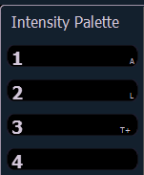

When you press the Intensity palette button twice, a list view for the Intensity palette type is opened on a new tab (or brings the list view into focus if already open). You can open the list views for the other palette types from the home screen. See Home Screen for more information.
You can also open the list views by using their tab numbers. Press and hold [Tab] and type the number to open.
Indicators for absolute (A), locked (L), and by type (T+) display to the right of the palette number.

Note: In the by type channels column, any channel number with an asterisk indicates that the channel does not have any by type data stored to it.
From the list view, you can select a palette for editing, which changes focus to blind channel view, with the specified palette ready for editing. In addition, you can add palettes to your list and edit the labels for each palette in the list.
For Example:
In the list view, you can select palettes and relabel or move them.
While in the specific palette category list view, the {Edit} softkey is available for use. The {Edit} softkey opens a blind channel view of the selected palette and changes focus from the palette list. You can change the blind display to spreadsheet or table view by pressing the [Format] key.
To copy a specific palette to a new palette:
You can copy palettes within the list to another location in the list using [Copy To].
You can also use [Copy To] from presets to palettes.
To move a specific palette to a different location:
You can also move data from a preset to a palette and vice versa. It is important to remember that when using the {Move To} command that data is removed from its current location and moved to its new location.
To edit any palette data from the List View: